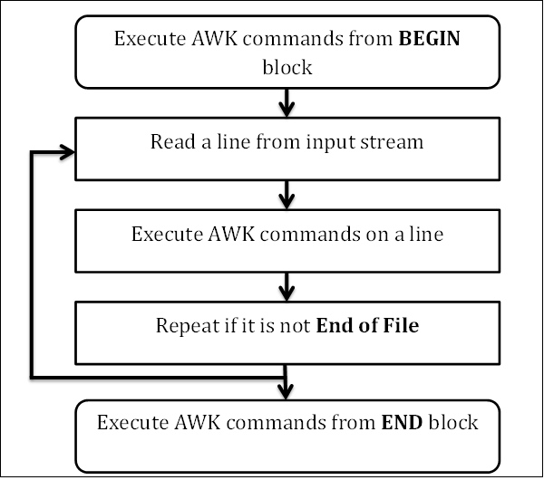

本文大部分内容翻译自我开始学习AWK时看到的一篇英文文章 AWK Tutorial ，觉得对AWK入门非常有帮助，所以对其进行了粗略的翻译，并对其中部分内容进行了删减或者补充，希望能为对AWK感兴趣的小伙伴提供一份快速入门的教 程，帮助小伙伴们快速掌握AWK的基本使用方式，当然，我也是刚开始学习AWK，本文在翻译或者补充的过程中肯定会有很多疏漏或者错误，希望大家能够帮忙 指正。
本文将会持续修正和更新，最新内容请参考我的 GITHUB 上的 程序猿成长计划 项目，欢迎 Star。
概述
AWK是一门解释型的编程语言。在文本处理领域它是非常强大的，它的名字来源于它的三位作者的姓氏：Alfred Aho， Peter Weinberger 和 Brian Kernighan。
GNU/Linux发布的AWK目前由自由软件基金会（FSF）进行开发和维护，通常也称它为 GNU AWK。
AWK的类型
下面是几个AWK的变体：
- AWK - 原先来源于 AT & T 实验室的的AWK
- NAWK - AT & T 实验室的AWK的升级版
- GAWK - 这就是GNU AWK。所有的GNU/Linux发布版都自带GAWK，它与AWK和NAWK完全兼容
AWK的典型用途
使用AWK可以做很多任务，下面是其中一些
- 文本处理
- 输出格式化的文本报表
- 执行算数运算
- 执行字符串操作等等
工作流
要成为AWK编程专家，你需要先知道它的内部实现机制，AWK遵循了非常简单的工作流 - 读取，执行和重复，下图描述了AWK的工作流。

Read
AWK从输入流（文件，管道或者标准输入）中读取一行，然后存储到内存中。
Execute
所有的AWK命令都依次在输入上执行。默认情况下，AWK会对每一行执行命令，我们可以通过提供模式限制这种行为。
Repeat
处理过程不断重复，直到到达文件结尾。
程序结构
现在，让我们先学习一下AWK的程序结构。
BEGIN 语句块
BEGIN语句块的语法
BEGIN {awk-commands}
BEGIN语句块在程序开始的使用执行，它只执行一次，在这里可以初始化变量。BEGIN是AWK的关键字，因此它必须为大写，注意，这个语句块是可选的。
BODY 语句块
BODY语句块的语法
/pattern/ {awk-commands}
BODY语句块中的命令会对输入的每一行执行，我们也可以通过提供模式来控制这种行为。注意，BODY语句块没有关键字。
END 语句块
END语句块的语法
END {awk-commands}
END语句块在程序的最后执行，END是AWK的关键字，因此必须为大写，它也是可选的。
让我们创建一个包含序号，学生姓名，科目名称和得分的文件 marks.txt。
1) Amit Physics 80
2) Rahul Maths 90
3) Shyam Biology 87
4) Kedar English 85
5) Hari History 89
下面的例子中我们将会显示文件内容，并且添加每一列的标题
$ awk 'BEGIN{printf "Sr No\tName\tSub\tMarks\n"} {print}' marks.txt
上述代码执行后，输出以下内容
Sr No Name Sub Marks
1) Amit Physics 80
2) Rahul Maths 90
3) Shyam Biology 87
4) Kedar English 85
5) Hari History 89
在程序的开始，AWK在BEGIN语句中打印出标题。然后再BODY语句中，它会读取文件的每一行然后执行AWK的print命令将每一行的内容打印到标准输出。这个过程会一直重复直到文件的结尾。
基础语法
AWK的使用非常简单，我们可以直接在命令行中执行AWK的命令，也可以从包含AWK命令的文本文件中执行。
AWK命令行
我们可以使用单引号在命令行中指定AWK命令
awk [options] file ...
比如我们有一个包含下面内容的文本文件 marks.txt:
1) Amit Physics 80
2) Rahul Maths 90
3) Shyam Biology 87
4) Kedar English 85
5) Hari History 89
我们可以使用下面的命令显示该文件的完整内容
$ awk '{print}' marks.txt
AWK程序文件
我们可以使用脚本文件提供AWK命令
awk [options] -f file ....
首先，创建一个包含下面内容的文本文件 command.awk
{print}
现在，我们可以让AWK执行该文件中的命令，这里我们实现了和上例同样的结果
$ awk -f command.awk marks.txt
AWK标准选项
AWK支持下列命令行标准选项
-v 变量赋值选项
该选项将一个值赋予一个变量，它会在程序开始之前进行赋值，下面的例子描述了该选项的使用
$ awk -v name=Jerry 'BEGIN{printf "Name = %s\n", name}'
Name = Jerry
--dump-variables[=file] 选项
该选项会输出排好序的全局变量列表和它们最终的值到文件中，默认的文件是 awkvars.out。
$ awk --dump-variables ''
$ cat awkvars.out
ARGC: 1
ARGIND: 0
ARGV: array, 1 elements
BINMODE: 0
CONVFMT: "%.6g"
ERRNO: ""
FIELDWIDTHS: ""
FILENAME: ""
FNR: 0
FPAT: "[^[:space:]]+"
FS: " "
IGNORECASE: 0
LINT: 0
NF: 0
NR: 0
OFMT: "%.6g"
OFS: " "
ORS: "\n"
RLENGTH: 0
RS: "\n"
RSTART: 0
RT: ""
SUBSEP: "\034"
TEXTDOMAIN: "messages"
--help 选项
打印帮助信息。
$ awk --help
Usage: awk [POSIX or GNU style options] -f progfile [--] file ...
Usage: awk [POSIX or GNU style options] [--] 'program' file ...
POSIX options : GNU long options: (standard)
-f progfile --file=progfile
-F fs --field-separator=fs
-v var=val --assign=var=val
Short options : GNU long options: (extensions)
-b --characters-as-bytes
-c --traditional
-C --copyright
-d[file] --dump-variables[=file]
-e 'program-text' --source='program-text'
-E file --exec=file
-g --gen-pot
-h --help
-L [fatal] --lint[=fatal]
-n --non-decimal-data
-N --use-lc-numeric
-O --optimize
-p[file] --profile[=file]
-P --posix
-r --re-interval
-S --sandbox
-t --lint-old
-V --version
--lint[=fatal] 选项
该选项允许检查程序的不兼容性或者模棱两可的代码，当提供参数 fatal的时候，它会对待Warning消息作为Error。
$ awk --lint '' /bin/ls
awk: cmd. line:1: warning: empty program text on command line
awk: cmd. line:1: warning: source file does not end in newline
awk: warning: no program text at all!
--posix 选项
该选项开启严格的POSIX兼容。
--profile[=file]选项
该选项会输出一份格式化之后的程序到文件中，默认文件是 awkprof.out。
$ awk --profile 'BEGIN{printf"---|Header|--\n"} {print}
END{printf"---|Footer|---\n"}' marks.txt > /dev/null
$ cat awkprof.out
# gawk 配置, 创建 Wed Oct 26 15:05:49 2016
# BEGIN 块
BEGIN {
printf "---|Header|--\n"
}
# 规则
{
print $0
}
# END 块
END {
printf "---|Footer|---\n"
}
--traditional 选项
该选项会禁止所有的gawk规范的扩展。
--version 选项
输出版本号
$ awk --version
GNU Awk 3.1.7
版权所有 © 1989, 1991-2009 自由软件基金会(FSF)。
该程序为自由软件，你可以在自由软件基金会发布的 GNU 通用公共许可证(GPL)第
3版或以后版本下修改或重新发布。
该程序之所以被发布是因为希望他能对你有所用处，但我们不作任何担保。这包含
但不限于任何商业适售性以及针对特定目的的适用性的担保。详情参见 GNU 通用公
共许可证(GPL)。
你应该收到程序附带的一份 GNU 通用公共许可证(GPL)。如果没有收到，请参看 http://www.gnu.org/licenses/ 。
You have new mail in /var/spool/mail/root
基本使用示例
本部分会讲述一些有用的AWK命令和它们的使用示例，所有的例子都是以下面的文本文件 marks.txt 为基础的
1) Amit Physics 80
2) Rahul Maths 90
3) Shyam Biology 87
4) Kedar English 85
5) Hari History 89
打印某列或者字段
AWK可以只打印输入字段中的某些列。
$ awk '{print $3 "\t" $4}' marks.txt
Physics 80
Maths 90
Biology 87
English 85
History 89
在文件marks.txt中，第三列包含了科目名，第四列则是得分，上面的例子中，我们只打印出了这两列，$3 和 $4 代表了输入记录中的第三和第四个字段。
打印所有的行
默认情况下，AWK会打印出所有匹配模式的行
$ awk '/a/ {print $0}' marks.txt
2) Rahul Maths 90
3) Shyam Biology 87
4) Kedar English 85
5) Hari History 89
上述命令会判断每一行中是否包含a，如果包含则打印该行，如果BODY部分缺失则默认会执行打印，因此，上述命令和下面这个是等价的
$ awk '/a/' marks.txt
打印匹配模式的列
当模式匹配成功时，默认情况下AWK会打印该行，但是也可以让它只打印指定的字段。例如，下面的例子中，只会打印出匹配模式的第三和第四个字段。
$ awk '/a/ {print $3 "\t" $4}' marks.txt
Maths 90
Biology 87
English 85
History 89
任意顺序打印列
$ awk '/a/ {print $4 "\t" $3}' marks.txt
90 Maths
87 Biology
85 English
89 History
统计匹配模式的行数
$ awk '/a/{++cnt} END {print "Count = ", cnt}' marks.txt
Count = 4
打印超过18个字符的行
$ awk 'length($0) > 18' marks.txt
3) Shyam Biology 87
4) Kedar English 85
内建变量
AWK提供了很多内置的变量，它们在开发AWK脚本的过程中起着非常重要的角色。
标准AWK变量
ARGC 命令行参数个数
命令行中提供的参数个数
$ awk 'BEGIN {print "Arguments =", ARGC}' One Two Three Four
Arguments = 5
ARGV 命令行参数数组
存储命令行参数的数组，索引范围从0 - ARGC - 1。
$ awk 'BEGIN {
for (i = 0; i < ARGC - 1; ++i) {
printf "ARGV[%d] = %s\n", i, ARGV[i]
}
}' one two three four
ARGV[0] = awk
ARGV[1] = one
ARGV[2] = two
ARGV[3] = three
CONVFMT 数字的约定格式
代表了数字的约定格式，默认值是%.6g
$ awk 'BEGIN { print "Conversion Format =", CONVFMT }'
Conversion Format = %.6g
ENVIRON 环境变量
环境变量的关联数组
$ awk 'BEGIN { print ENVIRON["USER"] }'
mylxsw
FILENAME 当前文件名
$ awk 'END {print FILENAME}' marks.txt
marks.txt
FS 输入字段的分隔符
代表了输入字段的分隔符，默认值为空格，可以通过-F选项在命令行选项中修改它。
$ awk 'BEGIN {print "FS = " FS}' | cat -vte
FS = $
$ awk -F , 'BEGIN {print "FS = " FS}' | cat -vte
FS = ,$
NF 字段数目
代表了当前行中的字段数目，例如下面例子打印出了包含大于两个字段的行
$ echo -e "One Two\nOne Two Three\nOne Two Three Four" | awk 'NF > 2'
One Two Three
One Two Three Four
NR 行号
$ echo -e "One Two\nOne Two Three\nOne Two Three Four" | awk 'NR < 3'
One Two
One Two Three
FNR 行号（相对当前文件）
与NR相似，不过在处理多文件时更有用，获取的行号相对于当前文件。
OFMT 输出格式数字
默认值为%.6g
$ awk 'BEGIN {print "OFMT = " OFMT}'
OFMT = %.6g
OFS 输出字段分隔符
输出字段分隔符，默认为空格
$ awk 'BEGIN {print "OFS = " OFS}' | cat -vte
OFS = $
ORS 输出行分隔符
默认值为换行符
$ awk 'BEGIN {print "ORS = " ORS}' | cat -vte
ORS = $
$
RLENGTH
代表了 match 函数匹配的字符串长度。
$ awk 'BEGIN { if (match("One Two Three", "re")) { print RLENGTH } }'
2
RS 输入记录分隔符
$ awk 'BEGIN {print "RS = " RS}' | cat -vte
RS = $
$
RSTART
match函数匹配的第一次出现位置
$ awk 'BEGIN { if (match("One Two Three", "Thre")) { print RSTART } }
9
SUBSEP 数组子脚本的分隔符
数组子脚本的分隔符，默认为\034
$ awk 'BEGIN { print "SUBSEP = " SUBSEP }' | cat -vte
SUBSEP = ^\$
$ 0 代表了当前行
代表了当前行
$ awk '{print $0}' marks.txt
1) Amit Physics 80
2) Rahul Maths 90
3) Shyam Biology 87
4) Kedar English 85
5) Hari History 89
$n
当前行中的第n个字段
$ awk '{print $3 "\t" $4}' marks.txt
Physics 80
Maths 90
Biology 87
English 85
History 89
GNU AWK的变量
ARGIND
当前被处理的ARGV的索引
$ awk '{
print "ARGIND = ", ARGIND; print "Filename = ", ARGV[ARGIND]
}' junk1 junk2 junk3
ARGIND = 1
Filename = junk1
ARGIND = 2
Filename = junk2
ARGIND = 3
Filename = junk3
BINMODE
在非POSIX系统上指定对所有的文件I/O采用二进制模式。
ERRORNO
一个代表了getline跳转失败或者是close调用失败的错误的字符串。
$ awk 'BEGIN { ret = getline < "junk.txt"; if (ret == -1) print "Error:", ERRNO }'
Error: No such file or directory
FIELDWIDTHS
设置了空格分隔的字段宽度变量列表的话，GAWK会将输入解析为固定宽度的字段，而不是使用FS进行分隔。
IGNORECASE
设置了这个变量的话，AWK会忽略大小写。
$ awk 'BEGIN{IGNORECASE = 1} /amit/' marks.txt
1) Amit Physics 80
LINT
提供了对--lint选项的动态控制。
$ awk 'BEGIN {LINT = 1; a}'
awk: cmd. line:1: warning: reference to uninitialized variable `a'
awk: cmd. line:1: warning: statement has no effect
PROCINFO
包含进程信息的关联数组，例如UID，进程ID等
$ awk 'BEGIN { print PROCINFO["pid"] }'
4316
TEXTDOMAIN
代表了AWK的文本域，用于查找字符串的本地化翻译。
$ awk 'BEGIN { print TEXTDOMAIN }'
messages
操作符
与其它编程语言一样，AWK也提供了大量的操作符。
算数操作符
算数操作符不多说，直接看例子，无非就是+-*/%
$ awk 'BEGIN { a = 50; b = 20; print "(a + b) = ", (a + b) }'
(a + b) = 70
$ awk 'BEGIN { a = 50; b = 20; print "(a - b) = ", (a - b) }'
(a - b) = 30
$ awk 'BEGIN { a = 50; b = 20; print "(a * b) = ", (a * b) }'
(a * b) = 1000
$ awk 'BEGIN { a = 50; b = 20; print "(a / b) = ", (a / b) }'
(a / b) = 2.5
$ awk 'BEGIN { a = 50; b = 20; print "(a % b) = ", (a % b) }'
(a % b) = 10
增减运算符
自增自减与C语言一致。
$ awk 'BEGIN { a = 10; b = ++a; printf "a = %d, b = %d\n", a, b }'
a = 11, b = 11
$ awk 'BEGIN { a = 10; b = --a; printf "a = %d, b = %d\n", a, b }'
a = 9, b = 9
$ awk 'BEGIN { a = 10; b = a++; printf "a = %d, b = %d\n", a, b }'
a = 11, b = 10
$ awk 'BEGIN { a = 10; b = a--; printf "a = %d, b = %d\n", a, b }'
a = 9, b = 10
赋值操作符
$ awk 'BEGIN { name = "Jerry"; print "My name is", name }'
My name is Jerry
$ awk 'BEGIN { cnt = 10; cnt += 10; print "Counter =", cnt }'
Counter = 20
$ awk 'BEGIN { cnt = 100; cnt -= 10; print "Counter =", cnt }'
Counter = 90
$ awk 'BEGIN { cnt = 10; cnt *= 10; print "Counter =", cnt }'
Counter = 100
$ awk 'BEGIN { cnt = 100; cnt /= 5; print "Counter =", cnt }'
Counter = 20
$ awk 'BEGIN { cnt = 100; cnt %= 8; print "Counter =", cnt }'
Counter = 4
$ awk 'BEGIN { cnt = 2; cnt ^= 4; print "Counter =", cnt }'
Counter = 16
$ awk 'BEGIN { cnt = 2; cnt **= 4; print "Counter =", cnt }'
Counter = 16
关系操作符
$ awk 'BEGIN { a = 10; b = 10; if (a == b) print "a == b" }'
a == b
$ awk 'BEGIN { a = 10; b = 20; if (a != b) print "a != b" }'
a != b
$ awk 'BEGIN { a = 10; b = 20; if (a < b) print "a < b" }'
a < b
$ awk 'BEGIN { a = 10; b = 10; if (a <= b) print "a <= b" }'
a <= b
$ awk 'BEGIN { a = 10; b = 20; if (b > a ) print "b > a" }'
b > a
逻辑操作符
$ awk 'BEGIN {
num = 5; if (num >= 0 && num <= 7) printf "%d is in octal format\n", num
}'
5 is in octal format
$ awk 'BEGIN {
ch = "\n"; if (ch == " " || ch == "\t" || ch == "\n")
print "Current character is whitespace."
}'
Current character is whitespace.
$ awk 'BEGIN { name = ""; if (! length(name)) print "name is empty string." }'
name is empty string.
三元操作符
$ awk 'BEGIN { a = 10; b = 20; (a > b) ? max = a : max = b; print "Max =", max}'
Max = 20
一元操作符
$ awk 'BEGIN { a = -10; a = +a; print "a =", a }'
a = -10
$ awk 'BEGIN { a = -10; a = -a; print "a =", a }'
a = 10
指数操作符
$ awk 'BEGIN { a = 10; a = a ^ 2; print "a =", a }'
a = 100
$ awk 'BEGIN { a = 10; a ^= 2; print "a =", a }'
a = 100
字符串连接操作符
$ awk 'BEGIN { str1 = "Hello, "; str2 = "World"; str3 = str1 str2; print str3 }'
Hello, World
数组成员操作符
$ awk 'BEGIN {
arr[0] = 1; arr[1] = 2; arr[2] = 3; for (i in arr) printf "arr[%d] = %d\n", i, arr[i]
}'
arr[2] = 3
arr[0] = 1
arr[1] = 2
正则表达式操作符
正则表达式操作符使用 ~ 和 !~ 分别代表匹配和不匹配。
$ awk '$0 ~ 9' marks.txt
2) Rahul Maths 90
5) Hari History 89
$ awk '$0 !~ 9' marks.txt
1) Amit Physics 80
3) Shyam Biology 87
4) Kedar English 85
# 匹配正则表达式需要在表达式前后添加反斜线，与js类似吧
$ tail -n 40 /var/log/nginx/access.log | awk '$0 ~ /ip\[127\.0\.0\.1\]/'
更多关于正则表达式请看后面的正则表达式部分
正则表达式
AWK在处理正则表达式方面是非常强大的，使用简单的正则表达式可以处理非常复杂的问题。
$ echo -e "cat\nbat\nfun\nfin\nfan" | awk '/f.n/'
fun
fin
fan
$ echo -e "This\nThat\nThere\nTheir\nthese" | awk '/^The/'
There
Their
$ echo -e "knife\nknow\nfun\nfin\nfan\nnine" | awk '/n$/'
fun
fin
fan
$ echo -e "Call\nTall\nBall" | awk '/[CT]all/'
Call
Tall
$ echo -e "Call\nTall\nBall" | awk '/[^CT]all/'
Ball
$ echo -e "Call\nTall\nBall\nSmall\nShall" | awk '/Call|Ball/'
Call
Ball
$ echo -e "Colour\nColor" | awk '/Colou?r/'
Colour
Color
$ echo -e "ca\ncat\ncatt" | awk '/cat*/'
ca
cat
catt
$ echo -e "111\n22\n123\n234\n456\n222" | awk '/2+/'
22
123
234
222
$ echo -e "Apple Juice\nApple Pie\nApple Tart\nApple Cake" | awk '/Apple (Juice|Cake)/'
Apple Juice
Apple Cake
数组
AWK支持关联数组，也就是说，不仅可以使用数字索引的数组，还可以使用字符串作为索引，而且数字索引也不要求是连续的。数组不需要声明可以直接使用，语法如下：
array_name[index] = value
创建数组的方式非常简单，直接为变量赋值即可
$ awk 'BEGIN {
fruits["mango"] = "yellow";
fruits["orange"] = "orange"
print fruits["orange"] "\n" fruits["mango"]
}'
orange
yellow
删除数组元素使用delete语句
$ awk 'BEGIN {
fruits["mango"] = "yellow";
fruits["orange"] = "orange";
delete fruits["orange"];
print fruits["orange"]
}'
在AWK中，只支持一维数组，但是可以通过一维数组模拟多维，例如我们有一个3x3的三维数组
100 200 300
400 500 600
700 800 900
可以这样操作
$ awk 'BEGIN {
array["0,0"] = 100;
array["0,1"] = 200;
array["0,2"] = 300;
array["1,0"] = 400;
array["1,1"] = 500;
array["1,2"] = 600;
# print array elements
print "array[0,0] = " array["0,0"];
print "array[0,1] = " array["0,1"];
print "array[0,2] = " array["0,2"];
print "array[1,0] = " array["1,0"];
print "array[1,1] = " array["1,1"];
print "array[1,2] = " array["1,2"];
}'
array[0,0] = 100
array[0,1] = 200
array[0,2] = 300
array[1,0] = 400
array[1,1] = 500
array[1,2] = 600
流程控制
流程控制语句与大多数语言一样，基本格式如下
if (condition)
action
if (condition) {
action-1
action-1
.
.
action-n
}
if (condition)
action-1
else if (condition2)
action-2
else
action-3
例如：
$ awk 'BEGIN {
num = 11; if (num % 2 == 0) printf "%d is even number.\n", num;
else printf "%d is odd number.\n", num
}'
$ awk 'BEGIN {
a = 30;
if (a==10)
print "a = 10";
else if (a == 20)
print "a = 20";
else if (a == 30)
print "a = 30";
}'
循环
循环操作与其他C系语言一样，主要包括 for，whlie，do...while，break，continue 语句，当然，还有一个 exit语句用于退出脚本执行。
for (initialisation; condition; increment/decrement)
action
while (condition)
action
do
action
while (condition)
例子：
$ awk 'BEGIN { for (i = 1; i <= 5; ++i) print i }'
$ awk 'BEGIN {i = 1; while (i < 6) { print i; ++i } }'
$ awk 'BEGIN {i = 1; do { print i; ++i } while (i < 6) }'
$ awk 'BEGIN {
sum = 0; for (i = 0; i < 20; ++i) {
sum += i; if (sum > 50) break; else print "Sum =", sum
}
}'
$ awk 'BEGIN {
for (i = 1; i <= 20; ++i) {
if (i % 2 == 0) print i ; else continue
}
}'
$ awk 'BEGIN {
sum = 0; for (i = 0; i < 20; ++i) {
sum += i; if (sum > 50) exit(10); else print "Sum =", sum
}
}'
exit用于退出脚本，参数为退出的状态码，可以通过shell中的$?获取
函数
内建函数
AWK提供了很多方便的内建函数供编程人员使用。由于函数比较多，个人觉得单纯看每个函数的使用也没有什么实际意义，比较容易遗忘，因此，这里只简单的列出常用的一些函数，只需要对其有个印象即可，使用的时候再去 查手册 效果会更好一些吧。
数学函数
atan2(y, x)cos(expr)exp(expr)int(expr)log(expr)randsin(expr)sqrt(expr)srand([expr])
字符串函数
asort(arr [, d [, how] ])asorti(arr [, d [, how] ])gsub(regex, sub, string)index(str, sub)length(str)match(str, regex)split(str, arr, regex)sprintf(format, expr-list)strtonum(str)sub(regex, sub, string)substr(str, start, l)tolower(str)toupper(str)
时间函数
systimemktime(datespec)strftime([format [, timestamp[, utc-flag]]])
字节操作函数
andcompllshiftrshiftorxor
其它
close(expr)关闭管道文件请看下面这段代码
$ awk 'BEGIN {
cmd = "tr [a-z] [A-Z]" print "hello, world !!!" |& cmd
close(cmd, "to")
cmd |& getline out
print out;
close(cmd);
}'
HELLO, WORLD !!!是不是感觉很难懂？让我来解释一下
- 第一个语句
cmd = "tr [a-z] [A-Z]"是我们在AWK中要用来建立双向连接的命令。 - 第二个语句
print提供了tr命令的输入，使用 &| 表名建立双向连接。 - 第三个语句
close(cmd, "to")用于执行完成后关闭to进程 - 第四个语句
cmd |& getline out使用getline函数存储输出到out变量 - 接下来打印变量out的内容，然后关闭cmd
- 第一个语句
delete用于删除数组元素exit退出脚本执行，并返回状态码参数fflushgetline该命令让awk读取下一行内容该命令让awk读取下一行内容，比如
$ awk '{getline; print $0}' marks.txt
2) Rahul Maths 90 4) Kedar English 85 5) Hari History 89使用
getline var < file可以从file中读取输入，存储到变量var中{
if (NF == 2 && $1 == "@include") {
while ((getline line < $2) > 0)
print line
# 这里的close确保如果文件中两个[@include](https://my.oschina.net/JLXINAO)，可以让其读取两次
close($2)
} else
print
}命令的输出也可以通过管道输入到
getline，使用command | getline这种方式。在这种情况下，字符串命令会作为shell命令执行，其标准输出会通过管道传递个awk作为其输入，这种形式的getline会从管道中一次读取一条记录。例如下面的命令会从输入中逐行读取，如果遇到@execute，则将该行作为命令执行，将命令的输出作为最终的输出内容{
if ($1 == "@execute") {
tmp = substr($0, 10) # Remove "@execute" while ((tmp | getline) > 0)
# 这里实际上设置了$0为这一行的内容 print close(tmp)
} else print }如果文件包含以下内容
foo
bar
baz
[@execute](https://my.oschina.net/u/1024735) who
bletch则会输出
foo bar baz arnold ttyv0 Jul 13 14:22 miriam ttyp0 Jul 13 14:23 (murphy:0) bill ttyp1 Jul 13 14:23 (murphy:0) bletch使用
command | getline var可以实现将命令的输出写入到变量var。BEGIN {
"date" | getline current_time close("date")
print "Report printed on " current_time }getline使用管道读取输入是一种单向的操作，在某些场景下，你可能希望发送数据到另一个进程，然后从这个进程中读取处理后的结果， 这就用到了协同进程，我们可以使用|&打开一个双向管道。print "some query" |& "db_server" "db_server" |& getline同样，我们也可以使用
command |& getline var将协同进程的输出写入到变量var。nextnextfilereturn用于用户自定义函数的返回值。 首先，创建一个functions.awk文件，包含下面的awk命令
function addition(num1, num2) {
result = num1 + num2
return result
}
BEGIN {
res = addition(10, 20)
print "10 + 20 = " res
}执行上述代码，输出
10 + 20 = 30system该函数用于执行指定的命令并且返回它的退出状态，返回状态码0表示命令成功执行。
$ awk 'BEGIN { ret = system("date"); print "Return value = " ret }'
2016年 10月 27日 星期四 22:08:36 CST Return value = 0
用户自定义函数
函数是程序基本的组成部分，AWK允许我们自己创建自定义的函数。一个大型的程序可以被划分为多个函数，每个函数之间可以独立的开发和测试，提供可重用的代码。
下面是用户自定义函数的基本语法
function function_name(argument1, argument2, ...) {
function body
}
例如，我们创建一个名为functions.awk的文件，包含下面的代码
# Returns minimum number
function find_min(num1, num2){
if (num1 < num2)
return num1
return num2
}
# Returns maximum number
function find_max(num1, num2){
if (num1 > num2)
return num1
return num2
}
# Main function
function main(num1, num2){
# Find minimum number
result = find_min(10, 20)
print "Minimum =", result
# Find maximum number
result = find_max(10, 20)
print "Maximum =", result
}
# Script execution starts here
BEGIN {
main(10, 20)
}
执行上述代码，会得到下面的输出
Minimum = 10
Maximum = 20
输出重定向
重定向操作符
到目前为止，我们所有的程序都是直接显示数据到了标准输出流，其实，我们也可以将输出重定向到文件。重定向操作符跟在print和printf函数的后面，与shell中的用法基本一致。
print DATA > output-file
print DATA >> output-file
例如，下面两条命令输出是一致的
$ echo "Hello, World !!!" > /tmp/message.txt
$ awk 'BEGIN { print "Hello, World !!!" > "/tmp/message.txt" }'
与shell中一样，
>用于将输出写入到指定的文件中，如果文件中有内容则覆盖，而>>则为追加模式写入。
$ awk 'BEGIN { print "Hello, World !!!" >> "/tmp/message.txt" }'
$ cat /tmp/message.txt
管道
除了将输出重定向到文件之外，我们还可以将输出重定向到其它程序，与shell中一样，我们可以使用管道操作符|。
$ awk 'BEGIN { print "hello, world !!!" | "tr [a-z] [A-Z]" }'
HELLO, WORLD !!!
AWK中可以使用|&进行双向连接，那么什么是双向连接呢？一种常见的场景是我们发送数据到另一个程序处理，然后读取处理结果，这种场景下就需要打开一个到另外一个进程的双向管道了。第二个进程会与gawk程序并行执行，这里称其为 协作进程。与单向连接使用|操作符不同的是，双向连接使用|&操作符。
do {
print data |& "subprogram"
"subprogram" |& getline results
} while (data left to process)
close("subprogram")
第一次I/O操作使用了|&操作符，gawk会创建一个到运行其它程序的子进程的双向管道，print的输出被写入到了subprogram的标准输入，而这个subprogram的标准输出在gawk中使用getline函数进行读取。
注意：目前协同进程的标准错误输出将会和gawk的标准错误输出混杂在一起，无法单独获取标准错误输出。另外，I/O缓冲可能存在问题，gawk程序会自动的刷新所有输出到下游的协同进程的管道。但是，如果协同进程没有刷新其标准输出的话，gawk将可能会在使用
getline函数从协同进程读取输出的时候挂起，这就可能引起死锁。
我们可以使用close函数关闭双向管道的to或者from一端，这两个字符串值告诉gawk发送数据到协同进程完成时或者从协同进程读取完毕时关闭管道。在使用系统命令sort的时候是这样做是非常必要的，因为它必须等所有输出都读取完毕时才能进行排序。
BEGIN {
command = "LC_ALL=C sort"
n = split("abcdefghijklmnopqrstuvwxyz", a, "")
for (i = n; i > 0; i--)
print a[i] |& command
close(command, "to")
while ((command |& getline line) > 0)
print "got", line
close(command)
}
例如，下面的例子中使用tr命令转换小写为大写。我们的command.awk文件包含以下内容
BEGIN {
cmd = "tr [a-z] [A-Z]"
print "hello, world !!!" |& cmd
close(cmd, "to")
cmd |& getline out
print out;
close(cmd);
}
输出
HELLO, WORLD !!!
上例看起来有些复杂，我们逐行分析一下
- 首先，第一行 cmd = "tr [a-z] [A-Z]" 是在AWK中要建立双向连接的命令
- 第二行的print命令用于为tr命令提供输入，而
|&用于指出要建立双向连接 - 第三行用于在上面的语句close(cmd, "to"),在执行完成后关闭其to进程
- 第四行 cmd |& getline out使用getline函数存储输出到变量out中
- 最后一行使用close函数关闭命令
美化输出
到目前为止，我们已经使用过print和printf函数显示数据到标准输出，但是printf函数实际上要比我们之前使用的情况更加强大得多。该函数是从C语言中借鉴来的，在处理格式化的输出时非常有用。
$ awk 'BEGIN { printf "Hello\nWorld\n" }'
Hello
World
$ awk 'BEGIN { printf "ASCII value 65 = character %c\n", 65 }'
ASCII value 65 = character A
格式化输出标识有
%c，%d，%s等，基本与C语言一致，这里就不多赘述了。
执行shell命令
在AWK中执行shell命令有两种方式
- 使用
system函数 - 使用管道
使用system函数
system函数用于执行操作系统命令并且返回命令的退出码到awk。
END {
system("date | mail -s 'awk run done' root")
}
使用管道
如果要执行的命令很多，可以将输出的命令直接用管道传递给"/bin/sh"执行
while (more stuff to do)
print command | "/bin/sh"
close("/bin/sh")